Themes and Palettes in cliomicplot
Lucas VHH Tran
2026-10-17
Source:vignettes/themes-palettes.Rmd
themes-palettes.RmdOverview
cliomicplot provides 13 publication-quality themes and 55+ curated color palettes engineered around the design specifications of premier journals: Nature, Cell, Science, NEJM, The Lancet, and JAMA.
This vignette covers: 1. The 13 Themes — open axes
vs. full-box frames, typography, and tick styles 2. 55+ Color
Palettes — journal presets, genomics, and strict
colorblind-safe palettes 3. Standalone Scales — using
palette_scale(), scale_color_cli(), and
scale_fill_cli() on any ggplot2 figure 4. Physical
Canvas Sizing — exact millimeter column widths for 9 major
publishers (cli_journal_size()) 5. Vector
Publication Export — automated compliance checks with
cli_save()
Part 1: Themes & Journal Styles
Theme Catalog
| Theme | Spines | Grid | Ticks | Best For |
|---|---|---|---|---|
nature |
Open (left & bottom only) | None | Outward (1.5 pt) | Nature, Nature Medicine, Nat. Comms |
science |
Ultra-clean open | None | Outward (1.5 pt) | Science, Science Immunology, Science Advances |
cell |
Structured open | None | Outward (1.5 pt) | Cell, Cancer Cell, Immunity, Molecular Cell |
nejm |
Open | Subtle horizontal | Outward (1.2 pt) | New England Journal of Medicine |
lancet |
Open | Subtle horizontal | Outward (1.2 pt) | The Lancet, Lancet Oncology |
scifig / sci_box
|
4 crisp black spines | Subtle dashed (0.3 pt) | Outward (2.5 pt) | Elsevier, IEEE, SCI journal submissions |
cli_bw |
4 spines (box) | Full grid | Inward | Standard laboratory exploration (default) |
cli_classic |
Left & bottom spines | None | Inward | Traditional base R appearance |
cli_minimal |
None | Faint | None | Modern presentations and dashboards |
broadsheet |
Subtle frame | Horizontal only | Outward | High-contrast newsprint / executive briefs |
dark |
Minimal dark | Faint | None | Keynote slides and conference presentations |
showcase |
High-contrast border | None | Outward | Poster presentations and hero figures |
Side-by-Side Journal Theme Comparison
The code below renders identical biomarker distributions across Nature, Science, Cell, NEJM, Lancet, and SCI full-box themes:
p_theme <- function(thm, title_txt) {
cliplot(Sepal.Length ~ Petal.Length | Species, data = iris,
palette = "npg", theme = thm,
stat.test = NULL,
title = title_txt)
}
(p_theme("nature", "Nature (Open Spines)") + p_theme("science", "Science (Clean Open)")) /
(p_theme("cell", "Cell Press (Structured)") + p_theme("scifig", "SCI Full-Box (4 Spines)")) /
(p_theme("nejm", "NEJM (Subtle Grid)") + p_theme("lancet", "The Lancet (Clinical)")) +
plot_annotation(title = "Theme Comparison Across Premier Scientific Journals")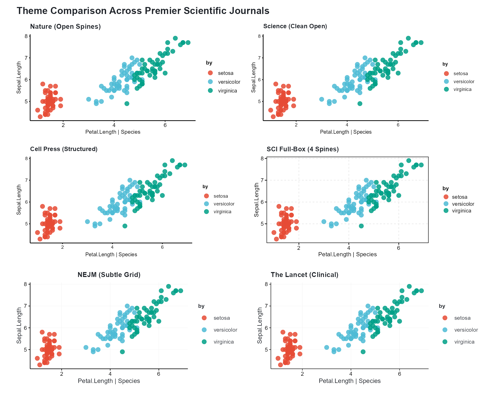
Open Axes vs. Full-Box Frames: Which to Choose?
-
Open Axes (
nature,science,cell,nejm,lancet):- Nature and Science strongly prefer removing top and right spines to maximize data ink and avoid confining the visual field.
- Outward tick marks prevent overlap with data points near the axis boundaries.
-
Full-Box Frame (
scifig/sci_box):- Elsevier, IEEE, and many specialized SCI journals require full rectangular frames enclosing all four sides of the plot.
-
theme_cli_scifig()applies 0.5 pt dark borders, crisp outward tick marks, and 0.3 pt dashed reference grid lines.
# Elsevier / IEEE style box plot with full frame
cliplot(len ~ dose | supp, data = ToothGrowth,
type = "boxplot",
theme = "scifig",
palette = "jco",
title = "Tooth Growth by Supplement & Dose",
subtitle = "Full-box frame with outward ticks (theme_cli_scifig)")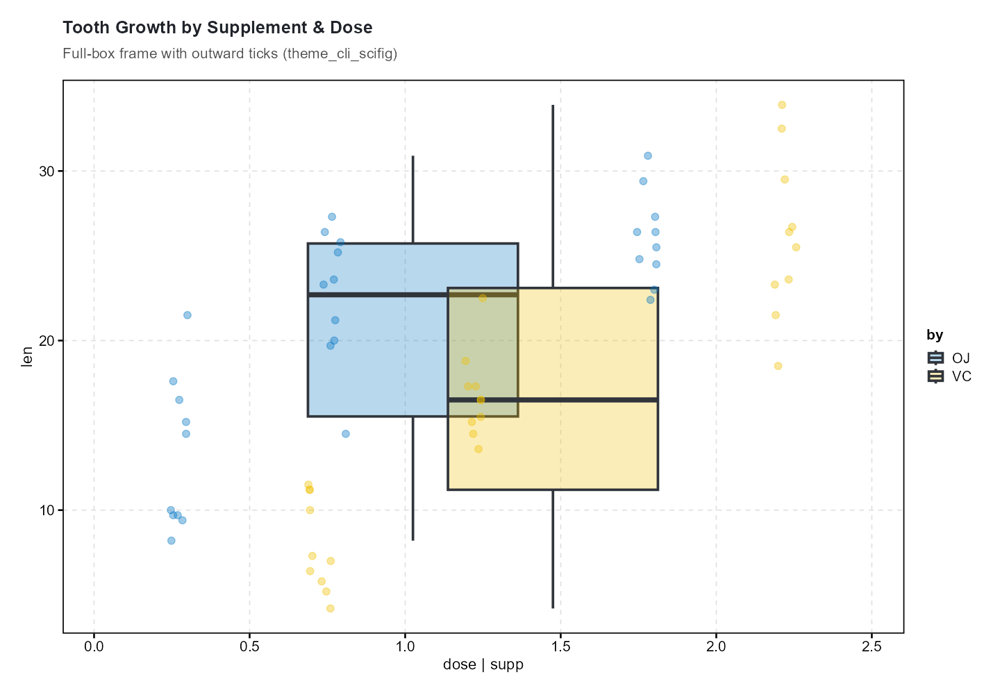
Persistent vs. Ephemeral Themes
# ── Persistent: applies to all subsequent plots ────────────────────
clitheme("nature")
cliplot(mpg ~ wt, data = mtcars,
title = "Plot 1 — Nature theme persists globally")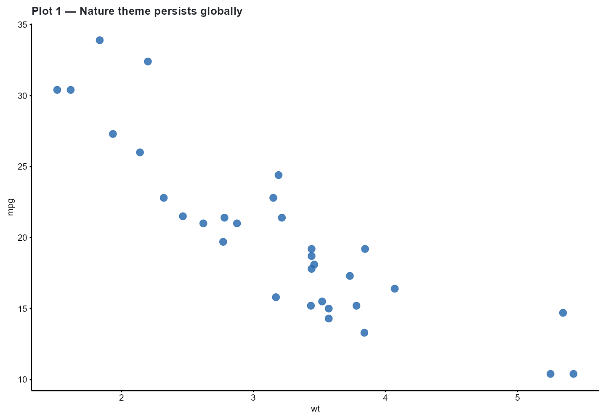
cliplot(len ~ dose, data = ToothGrowth, type = "boxplot",
title = "Plot 2 — Still using Nature theme")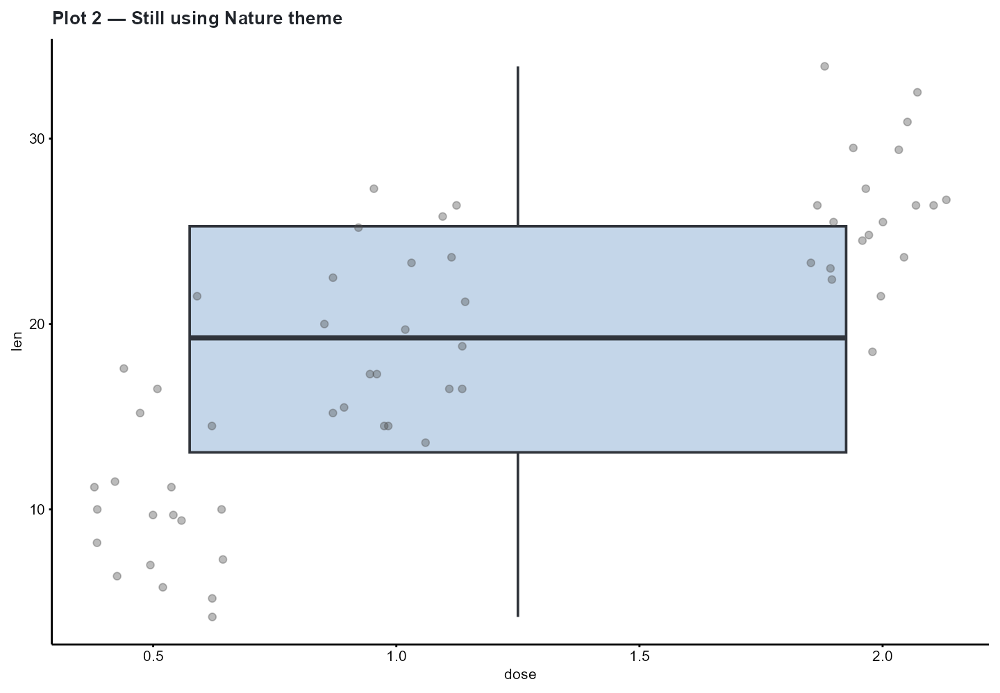
clitheme() # ← reset to default (cli_bw)
# ── Ephemeral: applies to one plot only ────────────────────────────
cliplot(mpg ~ wt, data = mtcars, theme = "cell",
title = "This plot uses Cell theme")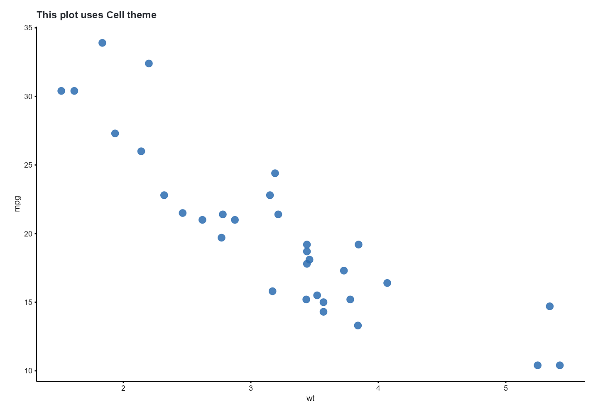
cliplot(mpg ~ wt, data = mtcars,
title = "Returned to default theme (cli_bw)")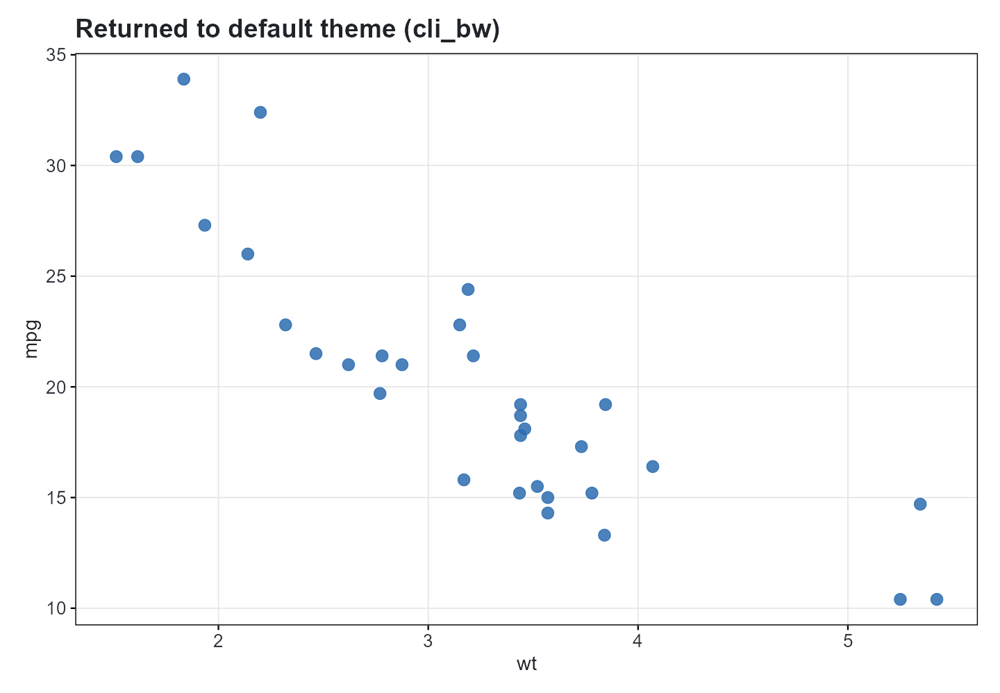
Custom Theme Registration
You can register bespoke lab or journal themes that remain accessible across your R session:
# Register custom institute theme
clitheme_register("broad_institute",
base = "nature",
axis.text = ggplot2::element_text(size = 9, face = "bold", color = "#1A1A1A"),
axis.title = ggplot2::element_text(size = 10, face = "bold"),
plot.title = ggplot2::element_text(size = 12, face = "bold", hjust = 0),
legend.position = "right"
)
# Apply registered theme
cliplot(mpg ~ wt, data = mtcars,
theme = "broad_institute",
title = "Broad Institute Custom Theme")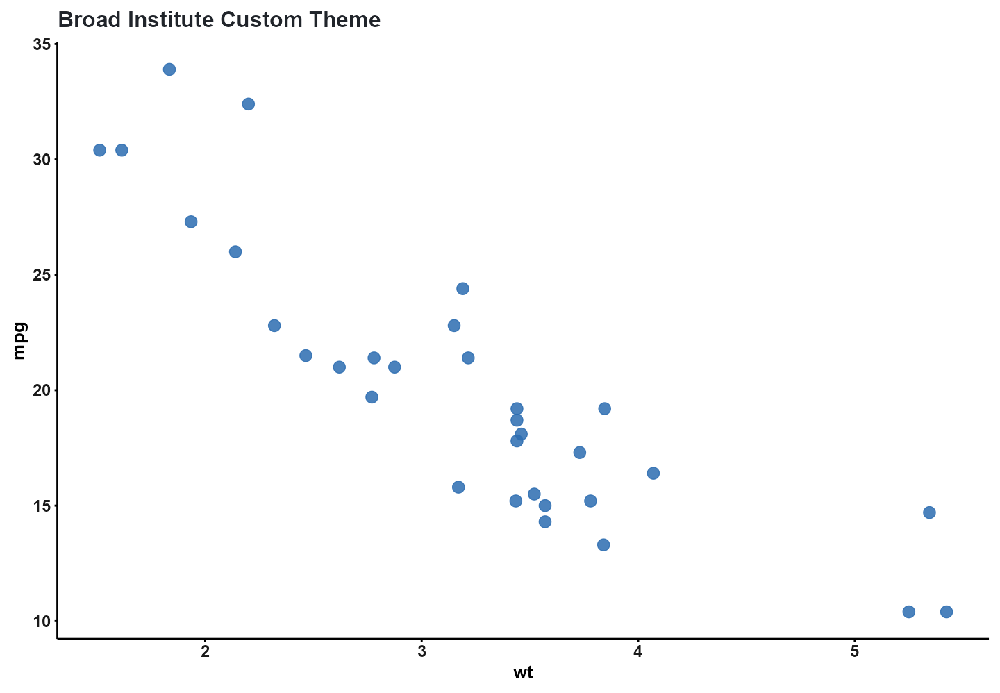
# Clean up
clitheme_unregister("broad_institute")Part 2: Color Palettes & Accessibility
cliomicplot provides 55+ palettes organized into clinical, journal, genomic, accessibility, and diverging families:
all_pals <- cli_palette_list()
cat(sprintf("Total available palettes: %d\n", length(all_pals)))
#> Total available palettes: 44
cat("Representative selection:\n")
#> Representative selection:
cat(paste(head(all_pals, 24), collapse = ", "))
#> jco, nejm, lancet, nature, science, okabe_ito, tableau10, tol_muted, heatmap_rdbu, heatmap_rdylbu, heatmap_prgn, volcano, pastel, soft, neon, cyberpunk, blues, reds, greens, purples, oranges, rd_yl_gn, spectral, pi_yg📰 Journal Palettes
Journal palettes match the official color schemes of premier publications:
p_npg <- cliplot(Sepal.Length ~ Petal.Length | Species, data = iris,
palette = "npg", theme = "nature", title = "Nature (npg)")
p_jama <- cliplot(Sepal.Length ~ Petal.Length | Species, data = iris,
palette = "jama", theme = "nejm", title = "JAMA (jama)")
p_npg + p_jama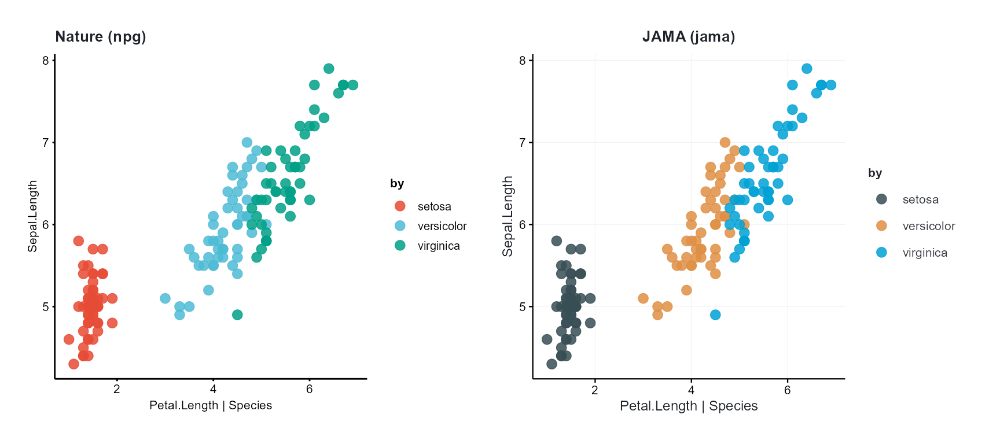
♿ Nature Policy: Colorblind Accessibility
Nature and Science submission guidelines explicitly mandate that figures must be interpretable by individuals with color vision deficiencies (CVD).
Never rely on green-red contrast alone. Use validated CVD-safe palettes:
p_oi <- cliplot(Sepal.Length ~ Petal.Length | Species, data = iris,
palette = "okabe_ito", theme = "nature",
title = "Okabe & Ito (2008) — Colorblind-Safe")
p_tol <- cliplot(Sepal.Length ~ Petal.Length | Species, data = iris,
palette = "tol_muted", theme = "nature",
title = "Paul Tol Muted — Universal CVD Safety")
p_oi + p_tol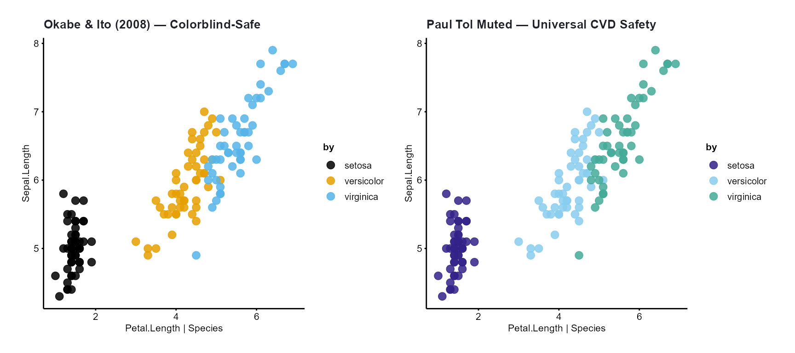
🧬 Genomics & Cancer Hallmarks
p_ucsc <- cliplot(Sepal.Length ~ Petal.Length | Species, data = iris,
palette = "ucscgb", theme = "cell",
title = "UCSC Genome Browser Chromosome Colors")
p_cosmic <- cliplot(Sepal.Length ~ Petal.Length | Species, data = iris,
palette = "cosmic", theme = "cell",
title = "COSMIC Cancer Hallmarks")
p_ucsc + p_cosmic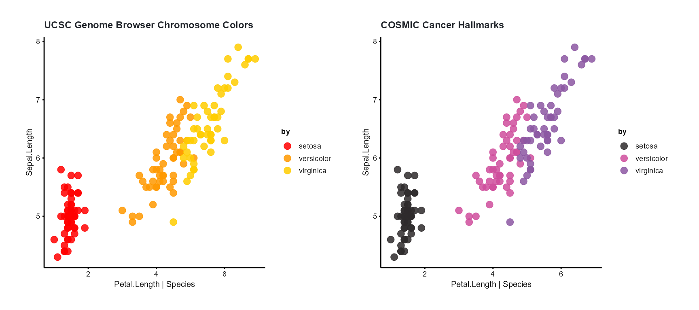
🔥 Continuous & Diverging Heatmap Scales
For heatmaps, correlation matrices, and spatial omics,
palette_scale() seamlessly provides continuous color
gradients:
p1 <- ggplot(faithfuld, aes(waiting, eruptions, fill = density)) +
geom_tile() +
palette_scale("heatmap_rdbu", "fill", type = "continuous") +
labs(title = "heatmap_rdbu (Diverging Red-Blue)") +
theme_cli_nature()
p2 <- ggplot(faithfuld, aes(waiting, eruptions, fill = density)) +
geom_tile() +
palette_scale("heatmap_prgn", "fill", type = "continuous") +
labs(title = "heatmap_prgn (Diverging Purple-Green)") +
theme_cli_nature()
p1 + p2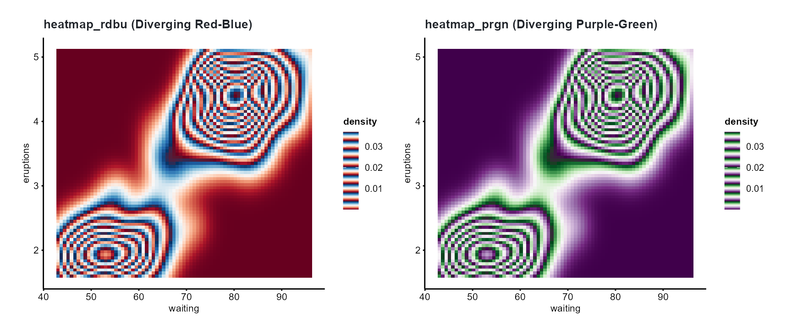
Part 3: Using Palettes as Standalone Scales
Every cliomicplot palette integrates with standard ggplot2 pipelines:
# Use with standard ggplot2 geom layers
ggplot(iris, aes(Sepal.Length, Petal.Length, color = Species)) +
geom_point(size = 3) +
scale_color_cli("lancet") +
theme_cli_lancet() +
labs(title = "scale_color_cli('lancet') on Base ggplot2")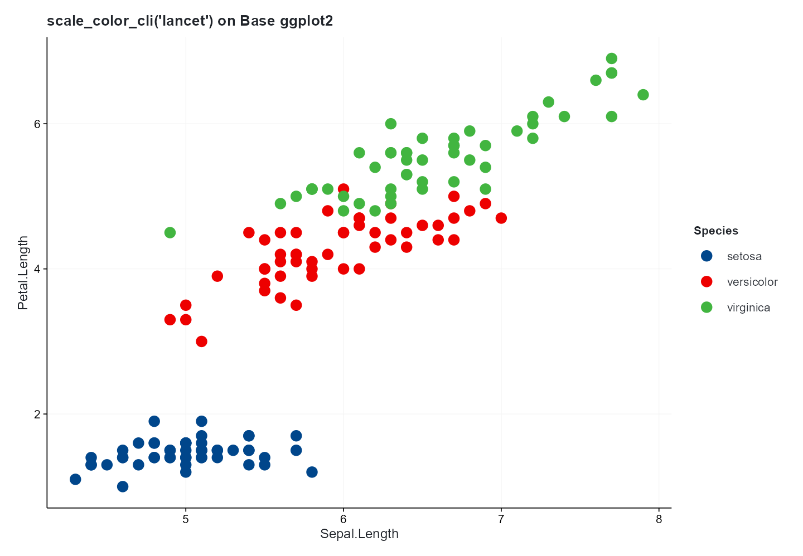
Part 4: Physical Canvas Sizing (cli_journal_size)
Submitting figures with arbitrary pixel dimensions results in distorted font sizes and downscaled labels during journal layout.
cli_journal_size() returns exact millimeter column
dimensions for 9 premier publishers:
journals <- c("nature", "science", "cell", "jama", "nejm", "lancet", "plos", "ieee")
dim_summary <- do.call(rbind, lapply(journals, function(j) {
s1 <- cli_journal_size(j, "single")
s2 <- cli_journal_size(j, "double")
data.frame(
Journal = toupper(j),
Single_Col_mm = s1$width_mm,
Double_Col_mm = s2$width_mm,
Max_Height_mm = s1$max_height_mm
)
}))
dim_summary
#> Journal Single_Col_mm Double_Col_mm Max_Height_mm
#> 1 NATURE 89.0 183.0 170.0
#> 2 SCIENCE 90.0 183.0 230.0
#> 3 CELL 85.0 180.0 203.0
#> 4 JAMA 86.4 177.8 220.0
#> 5 NEJM 89.0 180.0 220.0
#> 6 LANCET 85.0 175.0 220.0
#> 7 PLOS 83.0 190.5 222.3
#> 8 IEEE 88.9 181.9 220.0Both string aliases ("single", "one_half",
"double") and numeric columns (1,
1.5, 2) are supported:
# Numeric columns supported
cli_journal_size("nature", 1)$width_mm # 89 mm
#> [1] 89
cli_journal_size("nature", 2)$width_mm # 183 mm
#> [1] 183Part 5: Vector Publication Export (cli_save)
cli_save() combines exact journal dimensions, 600 DPI
rasterization when needed, and format compliance checking:
# Create publication figure
p <- cliplot(Sepal.Length ~ Petal.Length | Species, data = iris,
palette = "npg", theme = "nature",
title = "Biomarker Distribution by Species")
# 1. Export vector PDF for Nature (2 columns, 183 mm width)
cli_save(p, "Figure_1_Nature.pdf", journal = "nature", column = "double")
# 2. Export vector SVG for Cell Press (1 column, 85 mm width)
cli_save(p, "Figure_1_Cell.svg", journal = "cell", column = "single")
# 3. Export 600 DPI TIFF for clinical journal line art
cli_save(p, "Figure_1_Lancet.tiff", journal = "lancet", column = "double", dpi = 600)Summary
-
13 Themes: Open spines (
nature,science,cell,nejm,lancet), full 4-spine boxes (scifig), and presentation modes (dark,showcase). -
55+ Palettes: Strict CVD safety
(
okabe_ito,tol_muted), premier journals (npg,jama,lancet), and cancer hallmarks (cosmic). -
Standard ggplot2 integration:
palette_scale(),scale_color_cli(), andscale_fill_cli(). -
Publisher Sizing:
cli_journal_size()covers Nature, Cell, Science, JAMA, NEJM, Lancet, PLOS, and IEEE. -
Export Validation:
cli_save()ensures font embedding and canvas compliance.